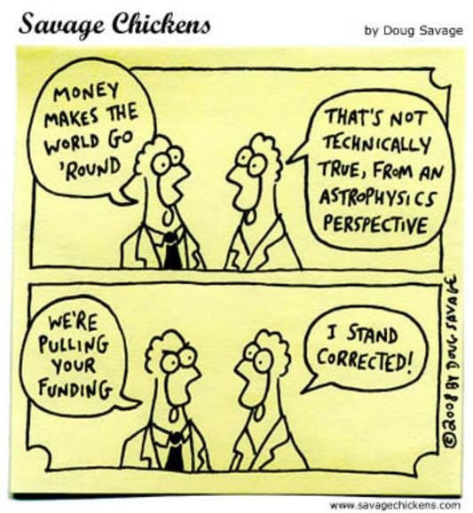

My master's thesis work is titled "Equation of State based on phenomenological relativistic mean-field theory for single and double fluid Neutron Stars," which I completed under the supervision of Prof. Paramasivan Arumugam (Member of the faculty at IITR and also a member of the Indian Pulsar Timing Array). The goal of my thesis was to investigate some superfluid models with various seeming compositions and compare them to observational data. I concentrated on the formalism of Quantum Hadrodynamics, which assumes that the neutron star’s composition is made up of hadrons and leptons. The relativistic mean-field theory deals with theoretically infinite degrees of freedom. For single and two-fluid neutron star models with density-dependent meson couplings. I computed the equation of state using Python. In the single fluid models, I solved the Tolman–Oppenheimer–Volkoff equations and the accompanying mass-radius diagrams, which are compared against limits derived from pulsar observations in the literature. The fractional moment of inertia is determined in the slow-rotation Thorne-Hartle approximation. I also calculated the tidal deformation as a function of the neutron star's mass. I focused on the entrainment effect in the co-rotation situation in the two-fluid models. With the developed equation of state in the two-fluid formalism, I learned computational astrophysics with this thesis, especially numerical analysis and plotting methods using Python. My master’s thesis work and the associated code were also useful in the two conference proceedings papers at the 66th Department of Atomic Energy, India’s symposium on nuclear physics.
I was also an undergraduate member of the Indian Pulsar Timing array (InPTA) since May 2021 to December 2022, an Indo-Japanese research lab led by Prof. Bhal Chandra Joshi from the National Centre for Radio Astrophysics, Pune, India, which is working on radio pulsars for the eventual discovery of stochastic gravitational-wave backgrounds. I worked with uGMRT data and contributed to the recent papers of the Indian Pulsar Timing Array collaboration. Being a co-author to the above papers and a member of the Indian Pulsar Timing Array, I contributed to the following, Radio Pulsar observations using uGMRT as primary observer from cycle 40 to 42, Data reduction using PINTA, Data analysis using Python, PSRCHIVE, TEMPO-2, DMcalc, PulsePortraiture and Cyber Infrastructure - website development. Before joining InPTA, alongside my coursework, I worked on a year-long project under the supervision of Prof. Bhal Chandra Joshi to develop a PSRCHIVE and Python-based pipeline to generate the dynamic and secondary spectrum of radio pulsars for their scintillation studies. I presented this work as a conference poster at the 40th meeting of the Astronomical Society of India in March 2022.
I have also been the project leader for developing a 5m Aperture single-dish radio telescope facility at the Indian Institute of Technology Roorkee (funded by the Dean of sponsored research and consultancy). Our initial design and performance calculations were presented at the upcoming 40th meeting of the Astronomical Society of India in March 2022. I led a team of 20 UG students with a faculty advisory committee of 5 members from the electronics and mechanical engineering department at IIT Roorkee. This project taught me proposal writing, team management, and logistics; also, I learned and eventually developed much interest in Radio Telescope Instrumentation.
I was awarded the ThinkSwiss research scholarship for the year 2022, by the Swissnex India Consulate General of Switzerland, funded by the Swiss State Secretariat for Education, Research and Innovation (SERI). With this fellowship I am working as a short-term research fellow under the supervision of Prof. Maurizio Falanga, director of the International Centre for Space Sciences and faculty member at the University of Bern, Switzerland. I worked on the theoretical calculations of the fractional changes in a pulsar’s spin period due to plane polarised high frequency gravitational waves leading to quadrupole oscillations, I also briefly worked on the pulsar magnetosphere radii and other important radial distances at different values of accretion luminosity and surface magnetic fields. My python script was useful for the PhD students at the University of Opava. I also worked briefly on deriving the orbital parameters of radial velocities of spectroscopic stellar binaries and tidal disruption of white dwarfs and their detectability by the lunar gravitational wave detectors, with the guidance of Prof. Maurizio Falanga. Recently I was at the position of visiting scientist for March-April 2023 at the International Space Science Institute, Bern, Switzerland. This position was a continuation of my work as a ThinkSwiss Research Fellow. I worked on simulating the low energy phase-resolved x-ray spectra of magnetic cataclysmic variables, the paper on the same is under preparation.
